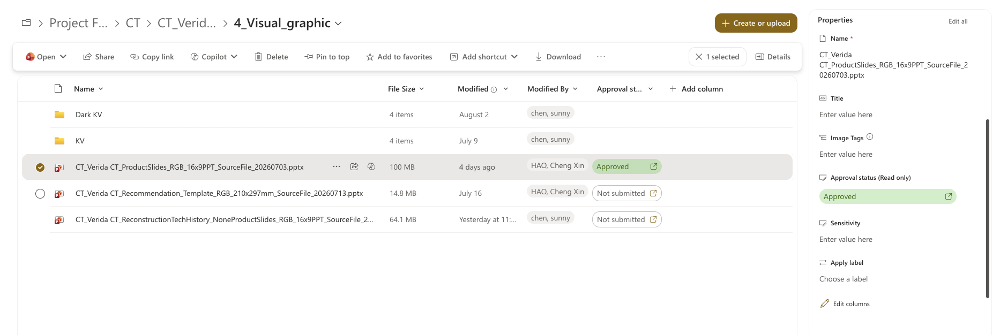

01 · Live execution
SharePoint 中的文件、审批与 metadata 同步管理
真实执行界面展示 WIP 文件、审批状态和资产属性，让每个 asset 的状态可见、可追踪。

File stateWIP 文件留在执行文件库
ApprovalApproved / Not submitted 状态清晰可见
PropertiesMetadata 与每个 asset 一起沉淀
Content demo · AI in marketing
以结构化 metadata 为底座，连接用户工作流、执行文件与正式发布资产。
真实执行界面展示 WIP 文件、审批状态和资产属性，让每个 asset 的状态可见、可追踪。
